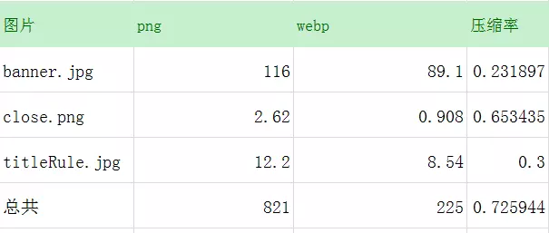
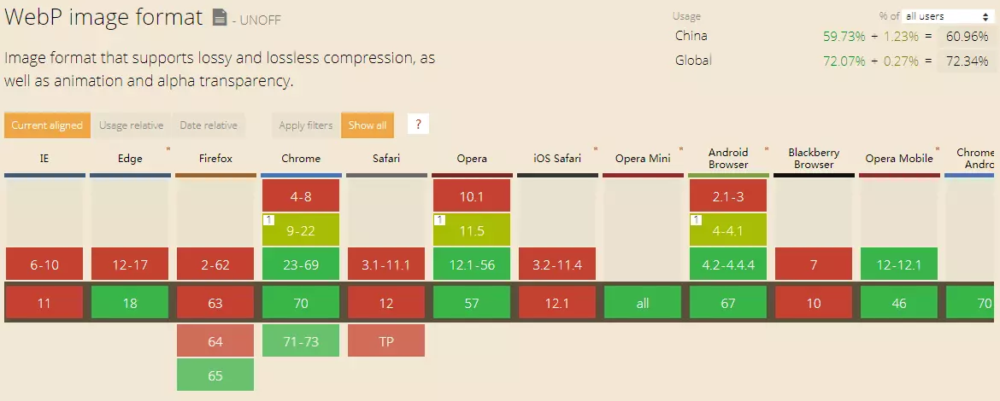
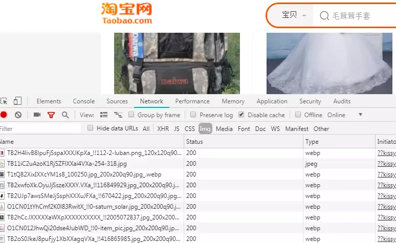
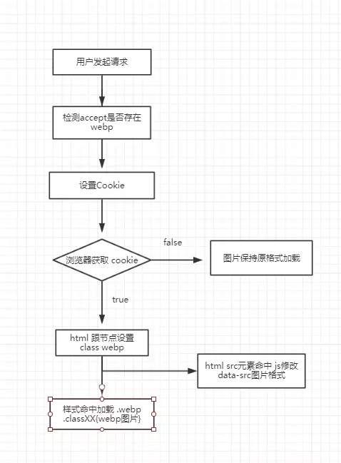

# 什么是 webp？
WebP 格式，谷歌开发的一种旨在加快图片加载速度的图片格式。图片压缩体积大约只有 JPEG 的 2/3，并能节省大量的服务器宽带资源和数据空间。
# 为什么要用 webp
- 减小图片加载资源的大小、节省用户流量资源
- 降低服务器流量资源
# 压缩率

# webp 兼容性情况

结果：谷歌全面支持、安卓浏览器从 4.2 开始支持。那么在页面中对于安卓用户中图片资源加载大小会有大幅度下降。
# webp 在各大网站的使用
淘宝中大量使用 webp。

各大 cdn 也是支持 webp 图片格式输出。
# 项目中的实践

# 技术实现
# webp 兼容性如何检测？
- 通过 js 浏览器端判断是否支持 webp
1
2
3
4
5
6
7
8
9
10
11
12
13
14
15
16
17
| function check_webp_feature(feature, callback) {
var kTestImages = {
lossy: "UklGRiIAAABXRUJQVlA4IBYAAAAwAQCdASoBAAEADsD+JaQAA3AAAAAA",
lossless: "UklGRhoAAABXRUJQVlA4TA0AAAAvAAAAEAcQERGIiP4HAA==",
alpha: "UklGRkoAAABXRUJQVlA4WAoAAAAQAAAAAAAAAAAAQUxQSAwAAAARBxAR/Q9ERP8DAABWUDggGAAAABQBAJ0BKgEAAQAAAP4AAA3AAP7mtQAAAA==",
animation: "UklGRlIAAABXRUJQVlA4WAoAAAASAAAAAAAAAAAAQU5JTQYAAAD/////AABBTk1GJgAAAAAAAAAAAAAAAAAAAGQAAABWUDhMDQAAAC8AAAAQBxAREYiI/gcA"
};
var img = new Image();
img.onload = function () {
var result = (img.width > 0) && (img.height > 0);
callback(feature, result);
};
img.onerror = function () {
callback(feature, false);
};
img.src = "data:image/webp;base64," + kTestImages[feature];
}
|
- 浏览器向服务端发起请求的时候 accept 会带上 image/webp 信息，在服务端判断是否支持 webp。
1
2
3
4
| map $http_accept $webp_suffix {
default "";
"~*webp" ".webp";
}
|
通过 nginx 中 map 方法，查找是否有 webp 字段，如果有设置 $webp_suffix 为.webp 值。通过该值就可以来判断是否支持 webp。如果支持写入 cookie，前端通过检测 cookie 做判断，是否加载 webp 图片。
nginx 中设置 cookie 代码
1
2
3
4
5
| location / {
if ($webp_suffix ~* webp) {
add_header Set-Cookie 'webpAvaile=true; path= /; expires=3153600';
}
}
|
# 在开发中使用
# sass 中使用
1
2
3
4
5
6
| @mixin webpbg($url) {
background-image: url($url);
@at-root .webpa & {
background-image: url($url+'.webp');
}
}
|
scss 文件使用
1
| @include webpbg('../image/header.jpg');
|
# html 中使用
1
2
3
4
| <picture class="img" >
<source class="img" srcset="images/banner.jpg.webp" type="image/webp">
<img class="img" id="headImg" src="images/banner.jpg"/>
</picture>
|
# 生成 webp 资源
使用 webpack 的 loader
1
2
3
4
5
6
7
8
9
10
11
12
13
14
15
16
17
18
19
20
21
22
23
24
25
26
27
28
29
30
31
32
33
34
35
36
37
38
39
40
41
42
43
44
45
46
47
48
49
50
51
52
53
54
55
56
57
58
59
60
61
62
63
64
65
66
67
68
69
70
71
| var imagemin = require('imagemin');
var imageminWebp = require('imagemin-webp');
var loaderUtils = require('loader-utils');
module.exports = function (content) {
this.cacheable && this.cacheable();
if (!this.emitFile) throw new Error("emitFile is required from module system");
var callback = this.async();
var options = loaderUtils.getOptions(this);
var url = loaderUtils.interpolateName(this, options.name || "[hash].[ext]", {
content: content,
regExp: options.regExp
});
this.emitFile(url, content);
var limit;
if (options.limit) {
limit = parseInt(options.limit, 10);
}
if (limit <= 0 || content.length < limit) {
callback(null, { buffer: content, url })
return;
}
var webpOptions = {
preset: options.preset || 'default',
quality: options.quality || 75,
alphaQuality: options.alphaQuality || 100,
method: options.method || 1,
sns: options.sns || 80,
autoFilter: options.autoFilter || false,
sharpness: options.sharpness || 0,
lossless: options.lossless || false,
};
if (options.size) {
webpOptions.size = options.size;
}
if (options.filter) {
webpOptions.filter = options.filter;
}
var webpUrl = url + '.webp';
imagemin.buffer(content, { plugins: [imageminWebp(webpOptions)] }).then(file => {
this.emitFile(webpUrl, file);
callback(null, { buffer: content, url, webpUrl });
}).catch(err => {
callback(err);
});
};
module.exports.raw = true;
|
nginx 生成
实现过程，对支持 webp 的请求设置 cookies。利用 nginx 检测图片请求是否存在，如果不存在通过 lua 调用 imageMagic 创建 webp 图片并返回。需要注意的是 nginx 需要安装 lua 支持的模块。
1
2
3
4
5
6
7
8
9
10
11
12
13
14
15
16
17
18
19
20
21
22
23
| user root; # nginx 用户权限 执行lua创建图片命令需要读写权限
# ...
http {
include mime.types;
server {
listen 80;
server_name webp.leewr.com;
root /home/leewr/mono/app/public/december;
location / {
if ($webp_suffix ~* webp) {
add_header Set-Cookie 'webpAvaile=true; path= /;';
}
}
location ~* ^(.+\.(jpg|png|jpeg|gif))(.webp)$ { # 正则匹配图片 paht/name.jpg.webp 格式的图片请求
if (!-f $request_filename) { # 如果图片不存在
access_log /usr/local/nginx/logs/december.log main; # 设置日志文件
set $request_filepath /home/leewr/mono/app/public/december/$1; # 图片真实路径变量
set $ext $3; # 设置图片扩展名$ext变量
content_by_lua_file lua/webp.lua; # 调用nginx/lua目录下的webp.lua文件
}
}
}
}
|
下面看 lua, lua 中代码非常简单。定义 command 命令，调用系统 os.execute (command) 执行 convert 图片转换命令。convert 是 ImageMagic 的命令。… lua 中字符串连接。ngx.var.ext 是 nginx 中定义的变量。
1
2
3
4
| local command
command = "convert " ..ngx.var.request_filepath.. " " ..ngx.var.request_filepath..ngx.var.ext
os.execute(command)
ngx.exec(ngx.var.request_uri)
|
原文地址